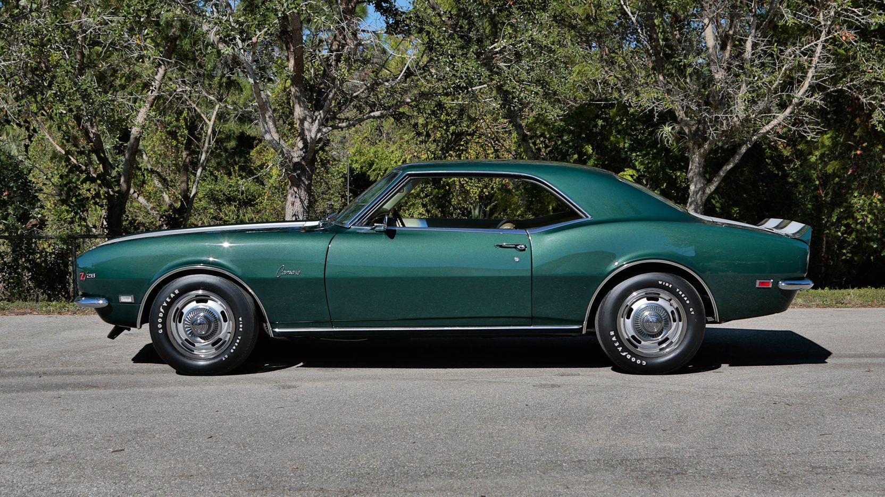

← Back to Portfolio


Automotive Project

1968 Chevrolet Camaro
This is a long-term father-son project that started from a bare chassis. We will have worked through nearly every system on the car, from the subframe and drivetrain to the body and paint, completing the work ourselves in our small garage.
Project Overview
The goal of this project has been to completely rebuild the Camaro from the ground up while learning and handling as much of the work ourselves as possible. The restoration has included mechanical systems, suspension, fabrication, bodywork, electrical work, and paint.
Work Completed
- Mechanical repairs and maintenance
- Component replacement and restoration work
- Troubleshooting and diagnosis
- Fabrication and custom-fit solutions
- General restoration and preservation